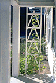
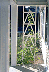
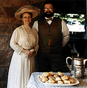

Roweny in Boston excerpt from a novel by Maria Louise Pool a Rockland native.

Lieven, a Bouvier des Flandres
|
 |
Roweny in Boston excerpt from a novel by Maria Louise Pool a Rockland native. |
Lieven, a Bouvier des Flandres |
John Burrows began to make scones after returning from England as a teenager. In recent years he has hosted a Cream Tea at the Vintage Dance Week in Newport, Rhode Island, with scones, whipped heavy cream and pots of strawberry jam. To serve 80 people, the recipe calls for over 10 pounds of flour, 2 pounds of butter, and in 1995 the guests consumed 4 pounds of jam. Because of the many requests for the recipe over the years (the original came from a local baker in Wiltshire, England), it is offered as follows:

To make approximately 16 scones
Ingredients:
4 cups flour
2 teaspoons cream of tartar
1 teaspoon bicarbonate of soda
1/2 teaspoon salt
1/2 cup butter
1/4+ cup sugar
1/2+ cup raisins (the original recipe was for sultanas)
1 1/2 cup buttermilk
Method:
Sieve together dry ingredients.
Rub in fat.
Add sugar and raisins.
Add milk and mix to a soft dough.
Roll out to 1/2 inch thick and cut into rounds with a fluted
cutter.
Bake 10 - 15 minutes at 450 degrees F.
For CHEESE SCONES eliminate the sugar and raisins. Add freshly ground
pepper to taste, 1 teaspoon full dry mustard and 4 ounces grated
cheddar cheese (sharp). Roll 3/4 inch thick and cut into triangles.
Tiny cheese scone triangles are excellent for hors d'oeuvres. Bake
for 15 to 20 minutes at 400 degrees F.
Go to J.R. Burrows & Company Main Page